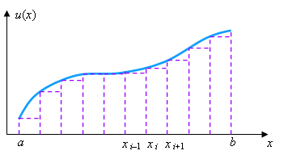
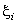
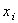

|
|
Рассмотрим непрерывную функцию одной переменной u = u(x),
для которой задан интервал её изменения x
[a; b]. Разобьём интервал [a; b]
на N равных частей (см. рисунок). Величину интервала деления обозначим за h.
На основе свойств определённого интеграла имеем:
|
|
 |
При бесконечном увеличении числа интервалов деления получаем
Заменяя 
на  в выражении (14.3),
получаем приближённую формулу для расчёта определённого интеграла:
Формула (14.4) называется формулой прямоугольников, поскольку точное выражение площади кривой u(x)
она заменяет на сумму площадей вписанных в неё прямоугольников.
Если заменить точное выражение площади кривой u(x)
на сумму площадей трапеций, построенных на основе точек деления (см. рисунок),
то получим следующую приближённую формулу для расчёта определённого интеграла,
называемую формулой трапеций:
Существуют и более сложные формулы для численного расчёта определённого интеграла,
однако в настоящем курсе мы на них останавливаться не будем.
|